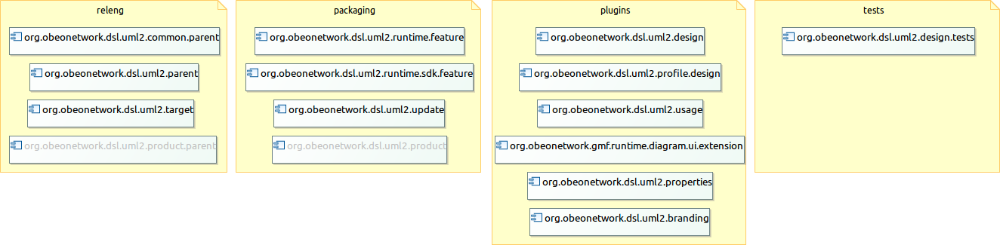
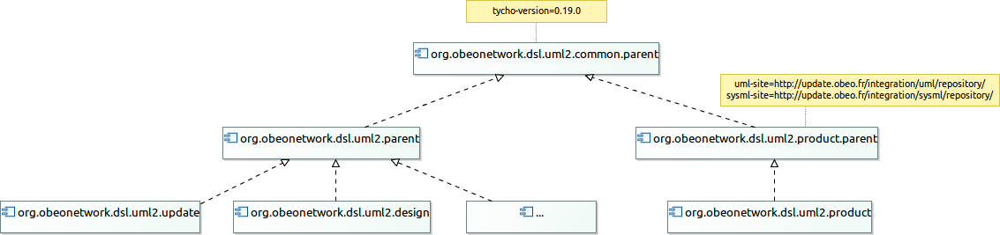

Build developer guide
Building UML Designer update-site
SysML Designer extends UML Designer and deals with systems engineering applications.
UML Designer and SysML Designer are both provided in the UML Designer Product.
The schema below explains dependencies:

You’ll need Apache Maven 3 to be installed on your computer and you must have cloned the UML Designer github repository on your computer.
To launch the build, go to the root of the git repository and type :
mvn clean package
Maven will bootstrap itself, download all the dependencies and build UML Designer. The output of the build is a p2 repository (an update site) generated here :
packaging/org.obeonetwork.dsl.uml2.update/target/repository
To install it in an Eclipse installation use Help/Install New Software and point to this location.
Launching the test is not harder, just type :
mvn clean verify
Maven will launch the tests and give you the result.
Code coverage is captured thanks to Jacoco.
This command build:

Build a product
We have a dedicated command for the product because it requires SysML Designer that we could want to rebuild.
mvn clean package -f releng/org.obeonetwork.dsl.uml2.product.parent/pom.xml
You will retrieve product in: packaging/org.obeonetwork.dsl.uml2.product/target/products/
This command build:

We can specify the previous UML Designer update-site:
... -Duml-site=file:./packaging/org.obeonetwork.dsl.uml2.update/target/repository
With the same logic, we can specify a custom Sysml Designer:
... -Dsysml-site=file:../SysML-Designer/packaging/org.obeonetwork.dsl.sysml.update/target/repository
Maven Tycho
Technically, we use Maven Tycho (0.19.0) to build these Eclipse artifacts.
To reuse a maximum of properties and maven configurations, we have a hierarchy of parents.
All UML designer plugins/features/update-sites refers to a dedicated parent:

For example, to add a new plugin org.obeonetwork.dsl.uml2.myplugin, add a
<module>${root-path}/plugins/org.obeonetwork.dsl.uml2.myplugin<module>in org.obeonetwork.dsl.uml2.parent and add a `pom.xml` in your plugin with the following header:
<project xmlns="http://maven.apache.org/POM/4.0.0"
xmlns:xsi="http://www.w3.org/2001/XMLSchema-instance"
xsi:schemaLocation="http://maven.apache.org/POM/4.0.0 http://maven.apache.org/maven-v4_0_0.xsd">
<modelVersion>4.0.0</modelVersion>
<parent>
<groupId>org.obeonetwork.dsl.uml2</groupId>
<artifactId>parent</artifactId>
<version>4.0.0-SNAPSHOT</version>
<relativePath>../../releng/org.obeonetwork.dsl.uml2.parent</relativePath>
</parent>
<artifactId>org.obeonetwork.dsl.uml2.myplugin</artifactId>
<packaging>eclipse-plugin</packaging>
...
</project>